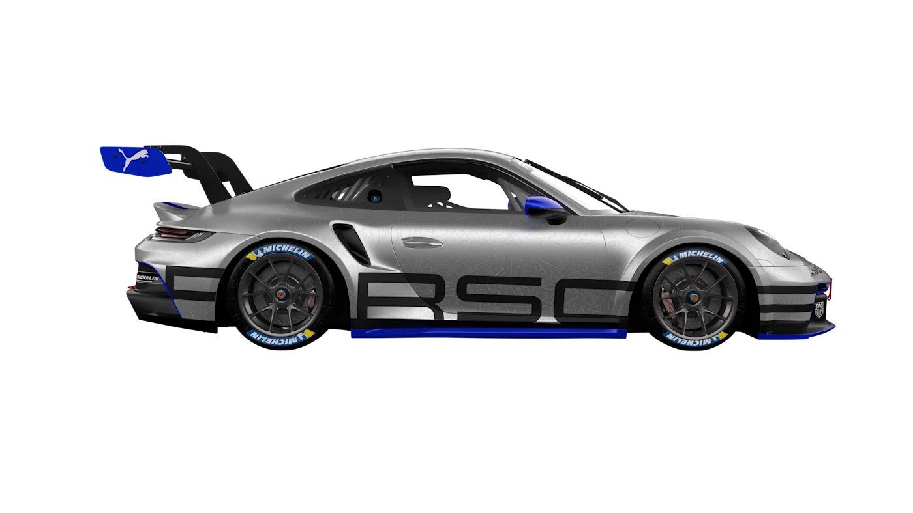
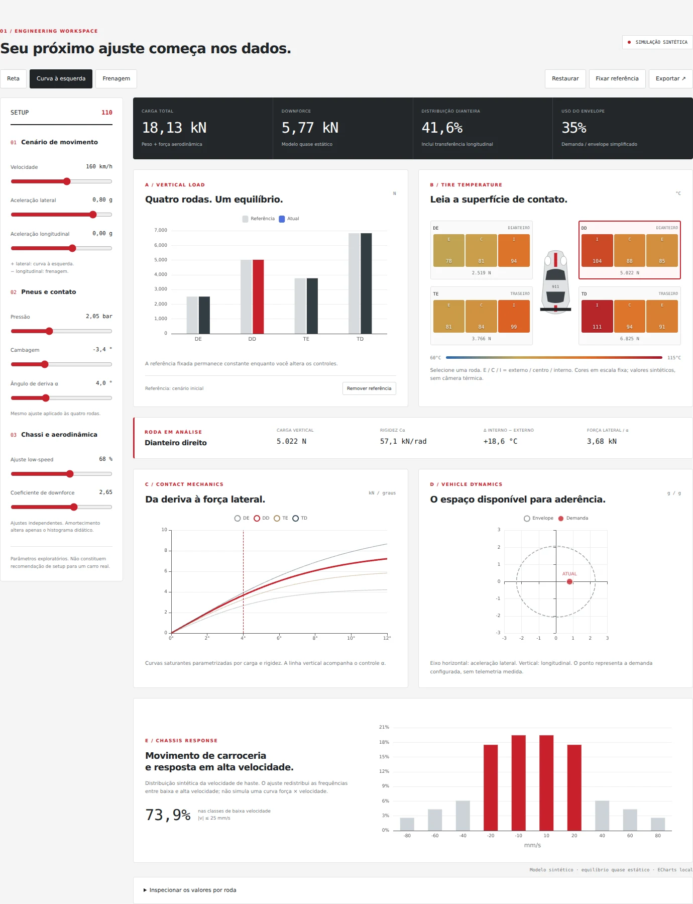

ESTUDO INDEPENDENTE / PROJETO 110
911 GT3 CUP · TIPO 992 / 2021PORSCHE CUP.
Precisão em cada ajuste.
PERFORMANCE ENGINEERING LAB
REFERÊNCIA VISUAL
PORSCHE MOTORSPORT01 / CARGA
02 / PNEUS
03 / DINÂMICA
PORSCHE MOTORSPORT01 / CARGA
02 / PNEUS
03 / DINÂMICA
Explore o equilíbrio entre carga, contato e comportamento.
Importe uma aquisição autorizada para analisar os canais.
Aquisição antes da interpretação.
A identidade visual permanece Porsche. Dados da F1 não equivalem a dados de um Porsche Cup. Este painel exige aquisição autorizada de cargas, temperaturas ou acelerações. Não há números de engenharia preenchidos sem fonte.
Arquivo visual anterior — dados sintéticos, não representa a sessão real atual
